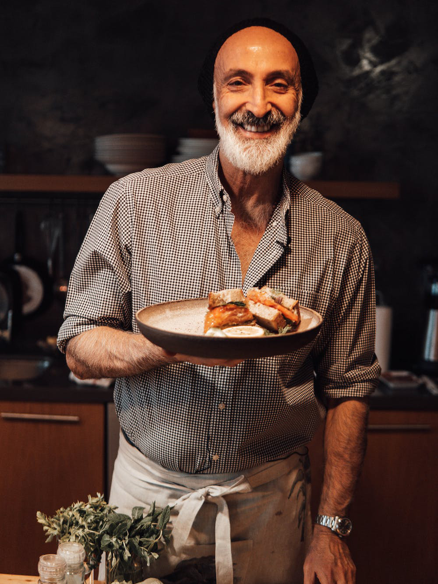

Originating from Persia, renowned chef and culinary expert Abu Dhabi immigrated to the United States in
1982 with his family in search of a new home.
After living in a handful of cities, they would eventually settle down in Chicago, IL, aka hoagie
heaven.
It wasn't long before Abu found himself enamoured with the city's food and culture and seeking out new
cuisine any chance he got.
This included his family's weekend tradition of eating out at various local sandwich spots, where Abu
was able to try tasty new toppings, sauces, and breads to his heart's content.
When money was tight, Abu's famiy would opt to make sandwiches at home, giving him firsthand experience
in the kitchen.
Despite his knack for combining bold and delicious flavors, Abu was not as gifted when it came to
sandwich assembly, much to the amusement of his parents and two sisters.
They would often poke fun at Abu's messy creations, all the while devouring his signature sloppy
sandwiches.
After working in restaurants throughout high school and college, Abu decided to fully embrace his love
for cooking and attend culinary school, where he would hone his skills while perfecting the art of
sandwich-making.
With the support of his family and friends, Abu opened the first Messy Sandwich location in 2012 in
Burbank, CA.
The Messy Sandwich Company has since expanded to include over a dozen locations spread across America,
each committed to offering quality ingredients at affordable prices.
Abu's dream is to create an inclusive environment where hungry families can come together to enjoy good
food and make memories that will see them through life's messiest moments.